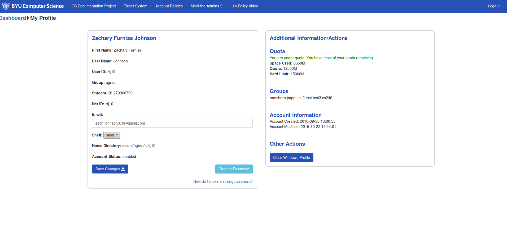

About Me
- Computer Science major at Brigham Young University
- Compute Platform Team Intern @ Adobe Systems
- Vice President of the BYU Linux Club
- Former Student System Administrator @ BYU CS Department
- Avid programmer
BYU CS Accounts Admin Page
The BYU Computer Science department had an old site that managed the student accounts for all the CS students but was lacking in functionality. I was tasked with recreating a site that the System Administrators could use to create mass amounts of accounts, manage Samba and LDAP users, create and edit Linux User Groups, and allow students to change settings on thier account as well.
The site can be accessed through cybertron.cs.byu.edu when on the Computer Science network.
Incognito
A game that you can play with friends and family, this summer project was my first attempt at a React.js and React-Redux application. It uses socket.io to keep players in sync, and uses a express.js server with a MongoDB instance to keep track of the game state. It was fun and can be played with at least 4 players at this url.
Adobe IQ
Summer Internship of 2016
Adobe Systems has over 15,000 virtual machines across more than 10 datacenters around the world. Keeping track of these is a large task which I was able to contribute towards during the summer of 2016. I devloped an application called Infrastructure Query (or IQ) that automated the documentation process and actively discovers both physical and virtual hardware on the network to ensure that everything had a record in Adobe's CMDB (Configuration Management Database).